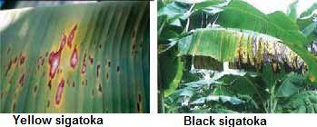

Banana Disease
Panama wilt
Disease symptoms
- Yellowing of the lower most leaves starting from margin to midrib of the leaves
- Yellowing extends upwards and finally heart leaf alone remains green for some time and it is also affected.
- The leaves break near the base and hang down around pseudostem
- Longitudinal splitting of pseudostem. Discolouration of vascular vessels as red or brown streaks.
Survival and spread
- The pathogen spreads through infected rhizomes
Favourable conditions
- Continuous cultivation in the infested field or monocroping results in buildup of inoculum
Organic solution
- Clean up growing areas thoroughly at the end of the season and remove all debris; otherwise, the pathogen will overwinter in leaves and other plant matter. The most important means of control is to replace diseased plants with non-resistant cultivars.

Mycosphaerella leaf spot, yellow sigatoka, black sigatoka
Disease symptoms
- Early symptoms appear on the third or fourth leaf from the top, i.e., on young leaves.
- Small spindle shaped spots on foliage with greyish centre and yellowish halo running parallel to veins.
- If the fruit is nearing maturity at the time of heavy infection, the flesh ripens but evenly and individual bananas appear undersized and their flesh develops a buff pinkish colour, and store poorly.
Survival and spread
- The conidia of the fungus are carried by wind ,rain water and old dried infected leaves and they help to spread the disease
Organic solution
- Management mainly involves chemical control using fungicides like copper oxychloride, mancozeb, chlorothalonil or carbendazim at the prescribed dosage. Fungicide spraying on the foliage and pseudostem should be commenced with the initial appearance and repeated at two weeks' interva.

Anthracnose
Disease symptoms
....................................................................................................- The skin of the fruit turns black and shrivels and becomes covered with characteristic pink acervuli. Finally the whole finger is affected. Later the disease spreads and affects the whole bunch
- The disease results in premature ripening and shriveling of the fruits which are covered with pink spore masses.
- Occurrence if black lesions on the pedicel causes withering of the pedicel and dropping of the fingers from the hands
- Sometimes the main stalk of the bunch may become diseased. Infected fruits become black and rotten
Survival and spread
- The spread of the disease is by air-borne conidia and numerous insects which frequently visit banana flowers also spread the disease
Favourable conditions
- The disease is favoured by high atmospheric temperature and humidity, wounds and brusies caused in the fruit and susceptibility of the variety
Organic solution
- Remove and destroy any infected plants in your garden. For trees, prune out the dead wood and destroy the infected leaves. You can try spraying your plants with a copper-based fungicide, though be careful because copper can build up to toxic levels in the soil for earthworms and microbes

Moko disease/bacterial wilt
Disease symptoms
- When it is cut open discolouration in vascular region with pale yellow to dark brown colour
- The discolouration is in the central portion of the corm.
- Internal rot of fruits with dark brown discoloration
- When the pseudostem is cut transversely bacterial ooze can be seen
Survival and spread
- The bacterium survives in infected plant material, vegetative propagative organs, wild host plants, and soil
Favourable conditions
- High temperatures and high soil moisture generally favors disease
Organic solution
- Permanently monitor the crop to detect plants with Moko disease. Use healthy, certified planting materials from nurseries registered with the national phytosanitary institution

Tip over or bacterial soft rot
Disease symptoms
- Roting of collar region is a commonest symptom followed by epinasty of leaves, which dry out suddenly
- If affected plants are pulled out it comes out from the collar region leaving the corm with their roots in the soil
- In early stage of infection dark brown or yellow water soaked areas are more in the cortex area When affected plants are cut open at collar region yellowish to reddish ooze is seenn
Survival and spread
- Bacteria survive in crop debris and infect by water splash through damaged tissuesl
- Worse in hot wet weather. The bacteria spread in contaminated water
Favourable conditions
- Higher temperatures and high humidity are ideal growing conditions for the bacteria
Organic solution
- Once soft rot bacteria have infected plants in the garden, there is no effective treatment. You will need to remove and dispose of infected plants as soon as possible to avoid further damage to other plants